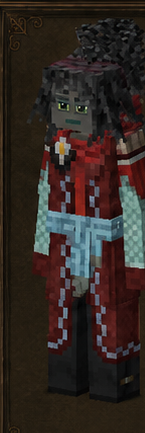
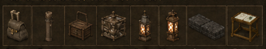

Mensajero
Messenger · código oficial
messenger · ficha 11/16
Rasgos: 6
Bonus: 7
Malus: 6
Recetas: 80

Resumen humano
logística pura. Sus números mejoran movimiento/caminos/transporte; es frágil.
Esta línea es interpretación funcional breve; lo importante son los números y recetas de abajo.
Bonus objetivos
- ahorro de durabilidad de pala: **+50%** (valor interno `0.5`)
- velocidad al caminar: **+20%** (valor interno `0.2`)
- velocidad con arena: **+50%** (valor interno `0.5`)
- velocidad con grava: **+50%** (valor interno `0.5`)
- velocidad con nieve: **+50%** (valor interno `0.5`)
- velocidad con tierra: **+50%** (valor interno `0.5`)
- velocidad en caminos: **+20%** (valor interno `0.2`)
Malus objetivos
- daño recibido global: **+10%** (valor interno `0.1`)
- drop de cultivos silvestres: **-25%** (valor interno `-0.25`)
- drop de forraje/recolección silvestre: **-25%** (valor interno `-0.25`)
- drop/rendimiento de animales: **-10%** (valor interno `-0.1`)
- rango de detección/agresión de animales: **+50%** (valor interno `0.5`)
- saciedad máxima: **-20%** (valor interno `-0.2`)
Rasgos oficiales y efectos reales
| Rasgo | Tipo | Datos objetivos |
|---|---|---|
Hostigadorharrier | positivo | velocidad al caminar: +20% (interno 0.2)daño recibido global: +10% (interno 0.1)rango de detección/agresión de animales: +50% (interno 0.5) |
Mensajeromessenger | positivo | sin atributos numéricos en traits.json; desbloqueo/rasgo de receta |
Pavimentadorroadlayer | positivo | ahorro de durabilidad de pala: +50% (interno 0.5)velocidad con grava: +50% (interno 0.5)velocidad con arena: +50% (interno 0.5)velocidad con nieve: +50% (interno 0.5)velocidad con tierra: +50% (interno 0.5) |
Ágilswift | positivo | velocidad en caminos: +20% (interno 0.2) |
Protegidosheltered | negativo | drop de forraje/recolección silvestre: -25% (interno -0.25)drop de cultivos silvestres: -25% (interno -0.25)drop/rendimiento de animales: -10% (interno -0.1) |
Peso ligerolightweight | negativo | saciedad máxima: -20% (interno -0.2) |
Recetas / desbloqueos
54mesa normal
24estación
2compatibilidad
80salidas listadas
Categorías detectadas
Bolsas y mochilas: 18Mesa de cartografía: 12Mesa de trabajo de cuero: 12Faroles y linternas: 11Lámparas de gas: 9Caminos y senderos: 8Velas: 5Candelabros: 2Primitive Survival: embarcaciones: 2Carreteras de asfalto: 1
Ver salidas exactas de recetas de esta clase (80)
| Modo | Categoría legible | Resultado legible | Nombre ES |
|---|---|---|---|
| mesa de crafteo normal | Carreteras de asfalto | Asphaltroad libre ×32 | — |
| mesa de crafteo normal | Bolsas y mochilas | Basket normal reed ×1 | — |
| mesa de crafteo normal | Bolsas y mochilas | Basket normal papyrus ×1 | — |
| mesa de crafteo normal | Bolsas y mochilas | Hunterbackpack ×2 | — |
| mesa de crafteo normal | Bolsas y mochilas | Hunterbackpack ×2 | — |
| mesa de crafteo normal | Bolsas y mochilas | Hunterbackpack ×3 | — |
| mesa de crafteo normal | Bolsas y mochilas | Hunterbackpack ×4 | — |
| mesa de crafteo normal | Bolsas y mochilas | Hunterbackpack ×4 | — |
| mesa de crafteo normal | Bolsas y mochilas | Hunterbackpack ×4 | — |
| mesa de crafteo normal | Bolsas y mochilas | Linensack ×1 | — |
| mesa de crafteo normal | Bolsas y mochilas | Backpack normal ×1 | — |
| mesa de crafteo normal | Bolsas y mochilas | Backpack sturdy ×1 | — |
| mesa de crafteo normal | Bolsas y mochilas | Messengerbag ×1 | — |
| mesa de crafteo normal | Bolsas y mochilas | Scrollcase ×1 | — |
| mesa de crafteo normal | Bolsas y mochilas | Scrollcase ×1 | — |
| mesa de crafteo normal | Bolsas y mochilas | Portablecrate ×1 | — |
| mesa de crafteo normal | Bolsas y mochilas | Portablecrate ×1 | — |
| mesa de crafteo normal | Bolsas y mochilas | Vesselframe ×1 | — |
| mesa de crafteo normal | Bolsas y mochilas | Vesselframe ×1 | — |
| mesa de crafteo normal | Velas | Candle ×4 | — |
| mesa de crafteo normal | Velas | Candle ×4 | — |
| mesa de crafteo normal | Velas | Candle ×4 | — |
| mesa de crafteo normal | Velas | Candle ×4 | — |
| mesa de crafteo normal | Velas | Oillamp color up ×1 | — |
| mesa de crafteo normal | Candelabros | Displaycase genérica ×1 | — |
| mesa de crafteo normal | Candelabros | Talldisplaycase genérica ×1 | — |
| mesa de crafteo normal | Lámparas de gas | Lámpara Jonas ×1 | — |
| mesa de crafteo normal | Lámparas de gas | Lámpara Jonas ×1 | — |
| mesa de crafteo normal | Lámparas de gas | Lámpara Jonas ×1 | — |
| mesa de crafteo normal | Lámparas de gas | Lámpara Jonas ×1 | — |
| mesa de crafteo normal | Lámparas de gas | Lámpara Jonas ×1 | — |
| mesa de crafteo normal | Lámparas de gas | Lámpara Jonas ×1 | — |
| mesa de crafteo normal | Lámparas de gas | Lámpara Jonas ×1 | — |
| mesa de crafteo normal | Lámparas de gas | Lámpara Jonas ×1 | — |
| mesa de crafteo normal | Lámparas de gas | Lámpara Jonas ×1 | — |
| mesa de crafteo normal | Faroles y linternas | Farol de papel off ×1 | — |
| mesa de crafteo normal | Faroles y linternas | Farol de papel encendido ×1 | — |
| mesa de crafteo normal | Faroles y linternas | Farol de papel encendido ×1 | — |
| mesa de crafteo normal | Faroles y linternas | Lantern small up ×1 | — |
| mesa de crafteo normal | Faroles y linternas | Lantern small up ×1 | — |
| mesa de crafteo normal | Faroles y linternas | Lantern small up ×1 | — |
| mesa de crafteo normal | Faroles y linternas | Lantern small up ×1 | — |
| mesa de crafteo normal | Faroles y linternas | Lantern large up ×1 | — |
| mesa de crafteo normal | Faroles y linternas | Lantern large up ×1 | — |
| mesa de crafteo normal | Faroles y linternas | Lantern large up ×1 | — |
| mesa de crafteo normal | Faroles y linternas | Lantern large up ×1 | — |
| mesa de crafteo normal | Caminos y senderos | Woodenpath envejecido norte-sur ×4 | — |
| mesa de crafteo normal | Caminos y senderos | Stonepath libre ×4 | — |
| mesa de crafteo normal | Caminos y senderos | Stonepathstairs up norte libre ×4 | — |
| mesa de crafteo normal | Caminos y senderos | Stonepathslab libre ×4 | — |
| mesa de crafteo normal | Caminos y senderos | Stonepath libre ×4 | — |
| mesa de crafteo normal | Caminos y senderos | Stonepath libre ×4 | — |
| mesa de crafteo normal | Caminos y senderos | Stonepath libre ×4 | — |
| mesa de crafteo normal | Caminos y senderos | Woodenpath Madera y carpintería norte-sur ×4 | — |
| estación especial | Mesa de cartografía | Asphaltroad libre ×64 | — |
| estación especial | Mesa de cartografía | Woodenpath envejecido norte-sur ×2 | — |
| estación especial | Mesa de cartografía | Stonepath libre ×2 | — |
| estación especial | Mesa de cartografía | Stonepath libre ×2 | — |
| estación especial | Mesa de cartografía | Stonepath libre ×2 | — |
| estación especial | Mesa de cartografía | Stonepathstairs up norte libre ×2 | — |
| estación especial | Mesa de cartografía | Stonepathstairs up norte libre ×2 | — |
| estación especial | Mesa de cartografía | Stonepathstairs up norte libre ×2 | — |
| estación especial | Mesa de cartografía | Stonepathslab libre ×2 | — |
| estación especial | Mesa de cartografía | Stonepathslab libre ×2 | — |
| estación especial | Mesa de cartografía | Stonepathslab libre ×2 | — |
| estación especial | Mesa de cartografía | Stonepath libre ×1 | — |
| estación especial | Mesa de trabajo de cuero | Backpack normal ×1 | — |
| estación especial | Mesa de trabajo de cuero | Backpack sturdy ×1 | — |
| estación especial | Mesa de trabajo de cuero | Messengerbag ×1 | — |
| estación especial | Mesa de trabajo de cuero | Scrollcase ×1 | — |
| estación especial | Mesa de trabajo de cuero | Basket normal reed ×1 | — |
| estación especial | Mesa de trabajo de cuero | Basket normal papyrus ×1 | — |
| estación especial | Mesa de trabajo de cuero | Hunterbackpack ×1 | — |
| estación especial | Mesa de trabajo de cuero | Hunterbackpack ×2 | — |
| estación especial | Mesa de trabajo de cuero | Hunterbackpack ×3 | — |
| estación especial | Mesa de trabajo de cuero | Hunterbackpack ×4 | — |
| estación especial | Mesa de trabajo de cuero | Hunterbackpack ×4 | — |
| estación especial | Mesa de trabajo de cuero | Linensack ×1 | — |
| receta de compatibilidad | Primitive Survival: embarcaciones | Floatingdock Madera y carpintería norte-sur ×2 | — |
| receta de compatibilidad | Primitive Survival: embarcaciones | Raft norte ×1 | — |
Archivos de esta ficha
Markdown corregido · PNG corregido · Fuente objetiva original si existe
{kind=link}